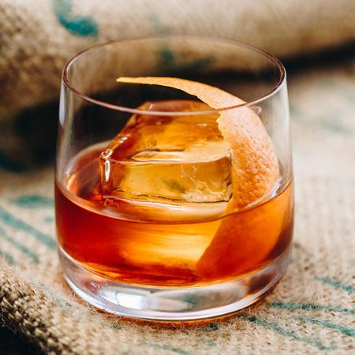

Old Fashion Recipe

A Classic whiskey cocktail everyone should know how to make.
They’re irresistibly strong, fruity and refreshing, yet simple cocktail.
Ingredients
- Ice cubes
- 60 ml of Whiskey
- Angostrua bitters
- Orange twist for garnish
- Sugar cube
- Cocktail shaker
Steps
- Put 2 dashes of bitters over a sugar cube and muddle it in a chilled rocks glass
- Add a couple of ice cubes and leave it to chill for 30 seconds
- Add your whiskey
- Stir add your orange twist garnish to add some presentation to the drink
- Enjoy!